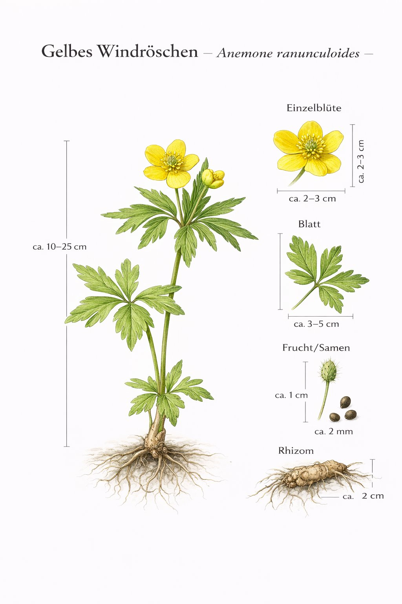
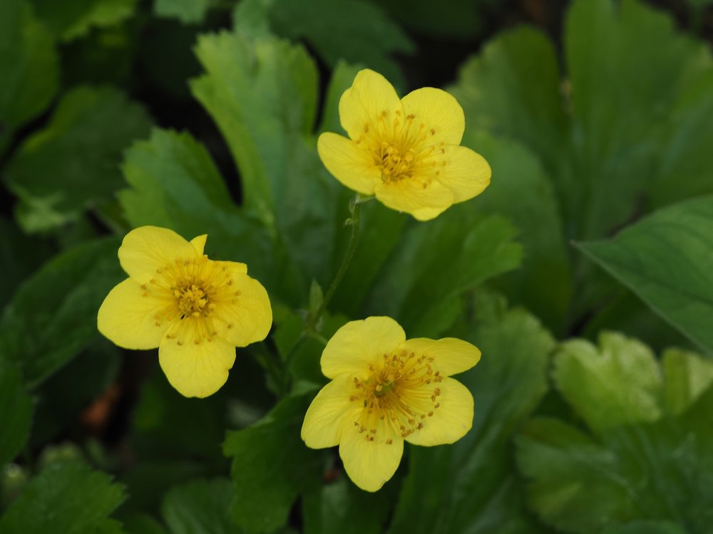

Nr. 8 · Frühblüher im Wald
Gelbes Windröschen
Anemone ranunculoides
Der übersehene gelbe Zwilling – seltener und oft im weissen Teppich versteckt.


Belohnungsmoment für Aufmerksame
Das Gelbe Windröschen wächst fast immer in Gesellschaft des Buschwindröschen – aber es ist seltener und geht im weissen Teppich unter. Erst wer genau hinschaut, entdeckt den gelben Tupfer. Das ist ein echter ‚Aha-Moment' auf der Exkursion: Wer es findet, gehört ab sofort zu den Geübten.
Warum gelb und warum seltener?
Gelb ist für Bienen aus grösserer Entfernung sichtbarer als Weiss – ein Vorteil beim Anlocken im dichten Unterholz. Trotzdem ist das Gelbe Windröschen seltener, weil es noch feuchtere, nährstoffreichere Standorte bevorzugt und in sauren Buchenwäldern ganz fehlt. "Ranunculoides" = hahnenfussähnlich:Der Artname verrät die Verwandtschaft – eine der ältesten Blütenpflanzenfamilien Europas, seit der Kreidezeit unverändert.
Wissenswertes & Merksätze
Leicht übersehen
Blüht gleichzeitig mit dem Buschwindröschen. Wer gezielt sucht, entdeckt die gelben Punkte im weissen Teppich – ein schöner Wettbewerb auf der Exkursion.
Waldzeuge
Sein Verschwinden wäre ein ökologischer Verlust, den keine Aufforstung in Jahrzehnten ausgleicht.